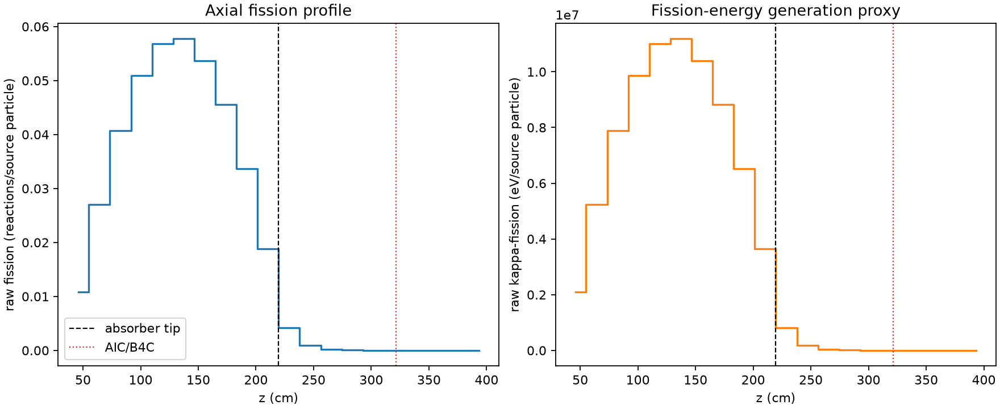
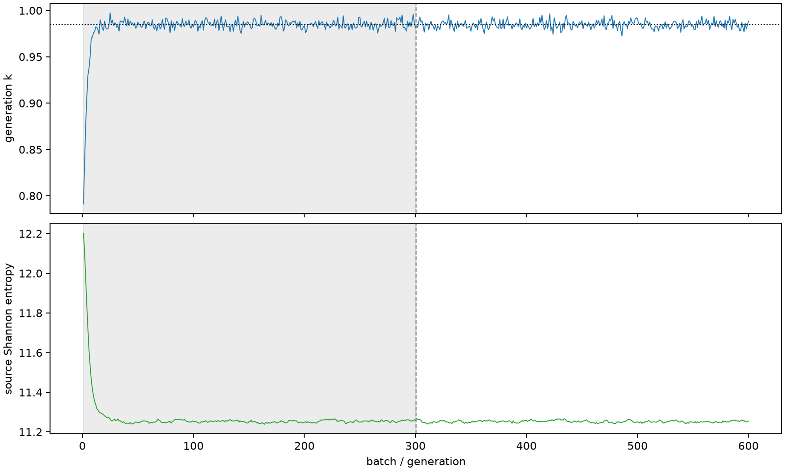

| field | value |
|---|---|
| experiment | V2-ADVISOR_PILOT8-0005 |
| k | 0.9846841909548972 |
| MC standard error | 0.00017553331749630243 |
| seconds | 1213.8854622159997 |
| acceptance | not_assessed |
| convergence | review_required |
Completed is output integrity only; physical and statistical review required. Zero tallies do not prove zero production or zero uncertainty.
| diagnostic | value |
|---|---|
| geometric fuel voxels | 5280 |
| zero fission tally voxels | 723 |
| low signal fuel voxels | 1618 |
| low signal fission share | 5.8212282183760175e-05 |
| low signal kappa share | 5.8253189801205785e-05 |
| important fission share | 0.9501731607132616 |
| previous filter included | 3662 |
| duration estimate s | 1562.5173488400023 |
| actual minus estimate s | -348.6318866240026 |
| fission relative MC error | statistics |
|---|---|
| all_geometric_fuel | {"voxels": 5280, "positive_mean_voxels": 4557, "zero_mean_voxels": 723, "undefined_relative_error_voxels": 723, "median": 0.01054387230294663, "p95": 0.7865314250997801, "maximum": 1.0000000000000002} |
| low_signal | {"voxels": 1618, "positive_mean_voxels": 895, "zero_mean_voxels": 723, "undefined_relative_error_voxels": 723, "median": 0.5484545375806902, "p95": 1.0, "maximum": 1.0000000000000002} |
| important_95pct | {"voxels": 2323, "positive_mean_voxels": 2323, "zero_mean_voxels": 0, "undefined_relative_error_voxels": 0, "median": 0.0067002422619810344, "p95": 0.010188378347566293, "maximum": 0.012377717143338714} |
| outside_previous_filter | {"voxels": 1618, "positive_mean_voxels": 895, "zero_mean_voxels": 723, "undefined_relative_error_voxels": 723, "median": 0.5484545375806902, "p95": 1.0, "maximum": 1.0000000000000002} |
| kappa_fission relative MC error | statistics |
|---|---|
| all_geometric_fuel | {"voxels": 5280, "positive_mean_voxels": 4557, "zero_mean_voxels": 723, "undefined_relative_error_voxels": 723, "median": 0.01053118176224577, "p95": 0.7859651113837857, "maximum": 1.0000000000000002} |
| low_signal | {"voxels": 1618, "positive_mean_voxels": 895, "zero_mean_voxels": 723, "undefined_relative_error_voxels": 723, "median": 0.546389398125753, "p95": 1.0, "maximum": 1.0000000000000002} |
| important_95pct | {"voxels": 2323, "positive_mean_voxels": 2323, "zero_mean_voxels": 0, "undefined_relative_error_voxels": 0, "median": 0.006691711904283607, "p95": 0.010175050863013839, "maximum": 0.012361159848680215} |
| outside_previous_filter | {"voxels": 1618, "positive_mean_voxels": 895, "zero_mean_voxels": 723, "undefined_relative_error_voxels": 723, "median": 0.546389398125753, "p95": 1.0, "maximum": 1.0000000000000002} |
| axial bin | fission share | kappa-fission share |
|---|---|---|
| 1 | 0.027028131494139174 | 0.02702953629434139 |
| 2 | 0.06730224164434596 | 0.06730190457620412 |
| 3 | 0.10140297674805125 | 0.10140254430254363 |
| 4 | 0.12697276194172166 | 0.12697213032337823 |
| 5 | 0.1416510895903567 | 0.14164981294845835 |
| 6 | 0.14383452475020267 | 0.14383315139053154 |
| 7 | 0.13373410383573664 | 0.1337326505421496 |
| 8 | 0.11347698132698673 | 0.1134757777993517 |
| 9 | 0.08399098522042252 | 0.08399025494115497 |
| 10 | 0.046921745642162484 | 0.046921842479229696 |
| 11 | 0.010573898334421234 | 0.0105783054374073 |
| 12 | 0.0023694498003852924 | 0.0023706028267394827 |
| 13 | 0.0005674660092312675 | 0.0005677250626982094 |
| 14 | 0.00013154930177709302 | 0.0001316338292823573 |
| 15 | 3.354188931740823e-05 | 3.356253410883737e-05 |
| 16 | 6.794560126778508e-06 | 6.803479137356999e-06 |
| 17 | 1.5025912489387542e-06 | 1.5061013006868441e-06 |
| 18 | 2.5372233123325515e-07 | 2.5353736947230914e-07 |
| 19 | 1.5970349826398668e-09 | 1.5946130870038365e-09 |
| 20 | 0.0 | 0.0 |
Histories include the inactive-to-active transition at batch 300. kappa-fission approximates fission energy production, not total heat deposition.

